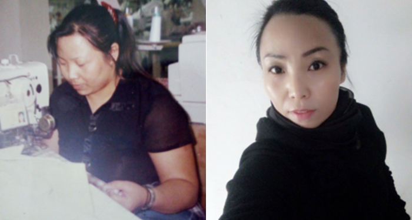

78690
78690你的40岁是什么样的？ 40岁，人到中年，上有老下有小，面临着家庭、事业双重压力。重压之下，有的人消极厌世，放任自己；有的人依然积极向上，成为更好的自己。 女人40，是一枝花还是满身赘肉，完全取决于你自己。
你不努力，谁也不能给你想要的身材
肖逸菲：自己开美容院，怎么能减不下肥来
减肥之路的疼痛与艰辛，肖逸菲最有发言权。
一次次失败，一次次尝试，又一次次以失败告终。吃减肥药、扎针、拔罐、敷减肥药包、使用各种减肥仪器……现今市面上有的减肥方式，肖逸菲几乎都试了个遍。然而，不仅收效甚微，反弹严重，甚至还惹了一身病。失眠多梦、肝肾功能下降，心脏也不好。40岁的年龄，身体健康却在走下坡路。
“曾有顾客说‘你自己开美容院，怎么就减不下肥来’，说者无心，听者有意。这句话对我刺激特别大，于是当即决定，再试一次！在健康养生达人何燕燕老师(jiaoshouhyy)的指导下，通过合理膳食、喝酵瘦酵素、参加食疗养生营等方法，短短两个月时间，成功减肥20多斤！更惊喜的是，曾经的萎缩性胃炎、痛经、关节疼痛等老毛病通通都好了，皮肤也比以前亮白有光泽。大家都说，这才是一个美容店长该有的样子。”
成功就是在失败很多次后再试一次！你不尝试，怎么就知道惊喜不会在下一次出现。

黄惠珊：方法比努力更重要
减肥，最怕就是反弹。体验过减肥后的轻盈与喜悦，就更加接受不了自己又胖回去的臃肿，这种痛，黄慧珊最懂。曾经从原先的115斤成功瘦身到98斤，结果过了一年，又胖回去了。问题出在哪里？方法没有找对！
“何老师（jiaoshouhyy）告诉我，减肥也要个性化、科学化、疗程化。不同年龄、性别、体质的人群，与之相匹配的减肥方法也不同。而且，减肥也要按照疗程持续推进才能达到最好效果，因此，只有因人而异，按照科学方法个性化定制减肥方案，并坚持按疗程进行，才能既纤体瘦身，又不反弹。专业的讲解让我信服，而相信专业的力量则让我看到奇迹。通过喝酵瘦酵素、参加食疗养生营，5天内就减了9.8斤！最为重要的是，体重持续在下降，到现在只有92、93斤左右，又重回到以前年轻的体重。体重变轻了，身体也健康灵活了，五一爬黄山甚至比我老公还要快！”
方法比努力更重要。依据科学，正确减肥，40多岁，照样可以重回青春，找回年轻纤瘦的身材与活力。
许卫红：减得快，更减得健康
肥胖引发的问题，不仅仅是身材臃肿，体态显老这么简单，通常还会伴随高血压、糖尿病等各种疾病。因此，减肥，高效之余，健康也至为关键。
体重从82.5kg降到70kg，腰围从原来的2尺9缩小到现在的2尺6，整整减了11cm，糖尿病血糖值从9.5降到5.9，头晕脑胀、恶心呕吐的脑梗症状，膝盖痛的毛病都大有改善，基本告别了胰岛素和口服降糖药。这是49岁的许卫红在服用酵瘦，参加食疗养生营近五个月时间后为我们晒出的“成绩单”。
“一切以健康为代价的减肥宣传，即使效果再好，都不值得相信。根据何老师（jiaoshouhyy）为我量身定制的养生规划，不仅体重减轻了，更值得兴奋的是，曾经严重到需要住院治疗的老毛病通通都有所缓解。这感觉，不仅像褪去一层厚厚的棉袄，更像阴郁许久的天忽见阳光，蓦然有一种豁然开朗的感觉。”
减得快，更减得健康。岁月的增长，是在学会精打细算、持家之道之余，更兼顾健康与形象。
献给每一位勇于改变的你！
微信扫描↓↓二维码,添加微信改变自己
还有更多小伙伴成功瘦身 你还在犹豫吗?

关注健康养生达人何燕燕老师的微信
你不努力，谁也不能给你想要的身材。是时候跟过去的自己say goodbye了！
小鱼儿、天空的云、最爱是你……等167人评论过
-
-
春江花月夜
第2楼
天啊！2个月减掉30斤，这是什么概念？不行，我也要报名减肥。 -
-
弯弯的月亮
第3楼
楼主太励志了，感谢分享，微信已加，我也要加油减肥啦。。。 -
-
天天天蓝
第4楼
这简直就是胖子逆袭啊！已关注，我也要瘦成一道闪电！ -
-
我爱工作
第5楼
减肥多次，效果总是不明显。已加微信，这一次，全靠你了！ -
-
请叫我瘦子
第6楼
我表示惊讶地嘴巴要掉下来了！俺也要去见证奇迹。了 -
-
咖啡与奶精
第7楼
胖子的痛我懂！不过已成功减肥18斤，感谢何老师！！！ -
-

-
陌上花开
第8楼
这，这，这，太励志了吧！俺也要报名减掉小肚腩！。 -
-
-
小爱自己%70
第9楼
这篇文章来得太及时了！产后肥了20斤，活生生成了大妈！甩掉小肥肉，看来还是得跟对人啊！ -
-
白天不懂夜的黑
第10楼
刚在何燕燕老师指导下服用酵瘦第二天，已经减了3斤，太神奇了！ -
-
秋天的树
第11楼
以前的同事参加过何老师的酵瘦酵素食疗养生营，说挺实在，效果也很明显，不像别的品牌总是吹嘘夸大。
版权所有@广州汇格生物科技有限公司